Cancers, one by one
Fact sheets on the most common cancers and those that raise most questions: what they are, symptoms, diagnosis, treatment, outlook and where to learn more.
Breast and gynaecological
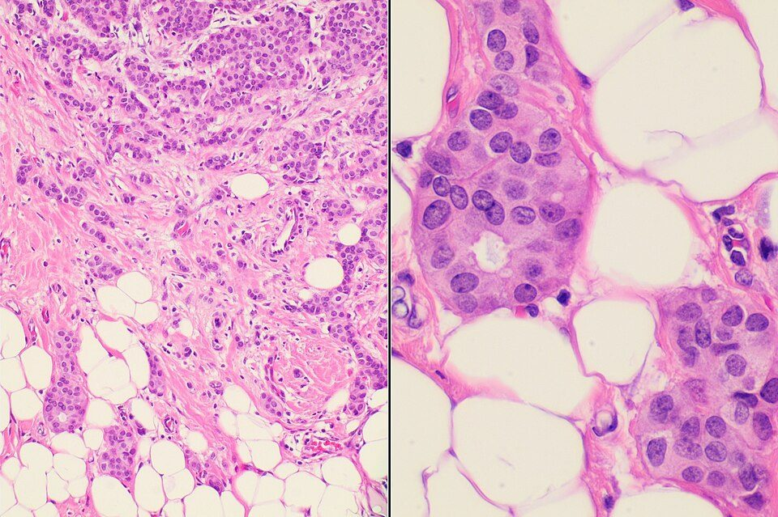
01Breast cancer
The most common cancer in women. Types, risk factors, screening, symptoms, diagnosis, treatment by stage and outlook, with official sources.
Read → 02
02Ductal carcinoma in situ
A breast lesion in which malignant cells have not left the ducts. It is almost always found on a mammogram and has an excellent outlook.
Read → 03
03Triple-negative breast cancer
A subtype without hormone receptors or HER2, more common in young women and BRCA1 carriers. Chemotherapy and immunotherapy have greatly improved results.
Read → 04
04HER2-positive breast cancer
A subtype with excess HER2 protein that once had a poor outlook and that anti-HER2 drugs have turned into one of the best-responding to treatment.
Read → 05
05Lobular breast cancer
The second most common type of breast cancer. It grows diffusely, is harder to see on mammograms and behaves in its own way.
Read → 06
06Breast cancer in men
About 1% of breast cancers occur in men. It is often diagnosed late because of lack of awareness, and frequently has an inherited component.
Read → 07
07Ovarian cancer
The deadliest gynaecological cancer, because it is usually found late. Types, symptoms to know, inheritance, surgery, chemotherapy and PARP inhibitors.
Read → 08
08Ovarian germ cell and stromal tumours
Uncommon ovarian tumours that often affect girls and young women. Many are cured while preserving fertility.
Read →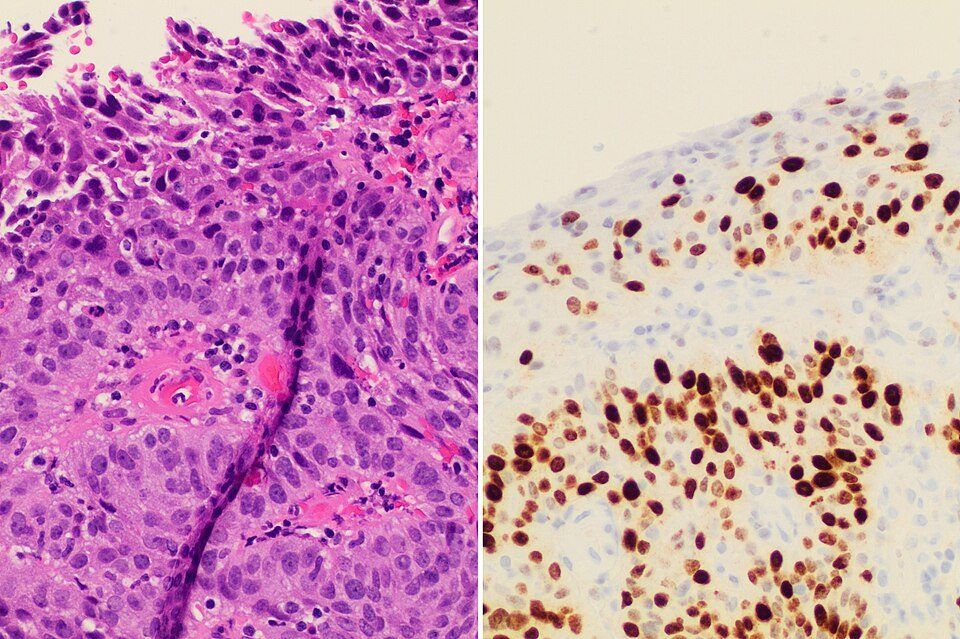
09Cervical cancer
One of the few cancers that can be almost completely prevented, with HPV vaccination and screening. Causes, precancer, symptoms, treatment and outlook.
Read →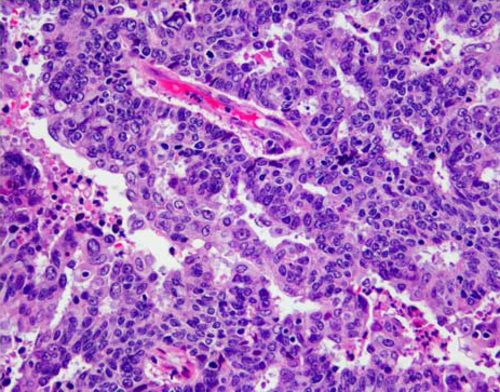
10Endometrial cancer
The most common gynaecological cancer in high-income countries. It warns early with bleeding after menopause and most cases are cured with surgery. Molecular classification has changed treatment.
Read →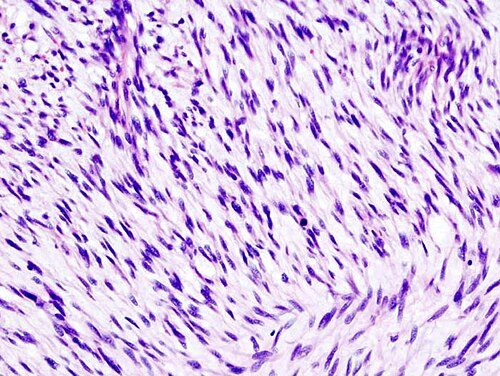
11Uterine sarcoma
Uncommon malignant tumours arising in the muscle or supporting tissue of the womb. They are often mistaken for fibroids.
Read →12Vulval cancer
An uncommon cancer of the external female genitals. Persistent itching or a sore that does not heal should be checked; there are two pathways, one linked to HPV and one to lichen sclerosus.
Read →13Vaginal cancer
One of the rarest gynaecological cancers. It is almost always an HPV-related squamous cell carcinoma and is treated mainly with radiotherapy.
Read →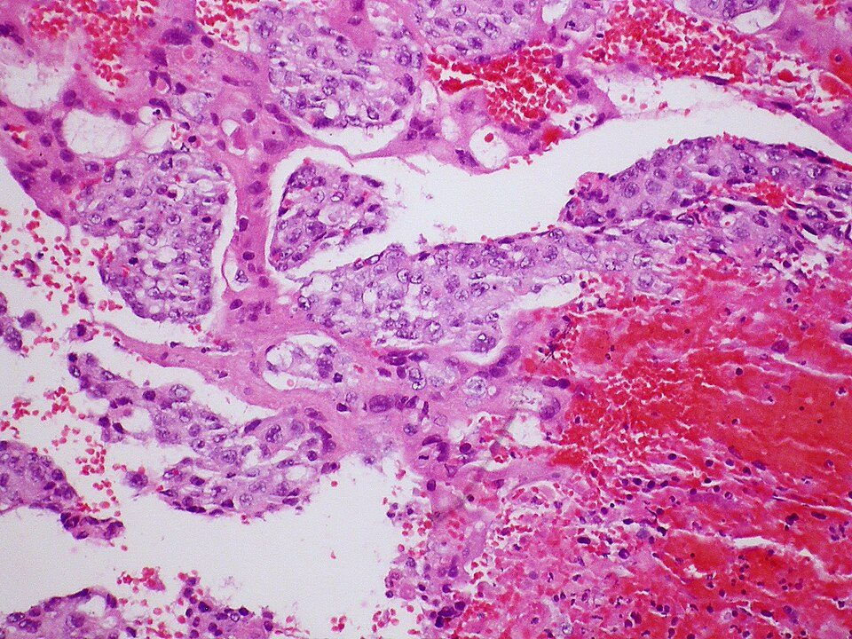
14Gestational trophoblastic disease
Tumours arising from placental tissue, from hydatidiform mole to choriocarcinoma. They are among the most curable cancers, even with metastases.
Read →Lung and chest
 15
15Lung cancer
The cancer that causes the most deaths worldwide. Tobacco causes most cases, but low-dose CT screening, targeted therapies and immunotherapy have changed its outlook.
Read → 16
16Small cell lung cancer
The most aggressive type of lung cancer, almost always in smokers. It grows and spreads quickly but responds at first to chemotherapy; immunotherapy and tarlatamab have opened new options.
Read → 17
17Lung carcinoid tumours
Slow-growing neuroendocrine tumours of the lung with no clear link to smoking. Most are cured by surgery.
Read →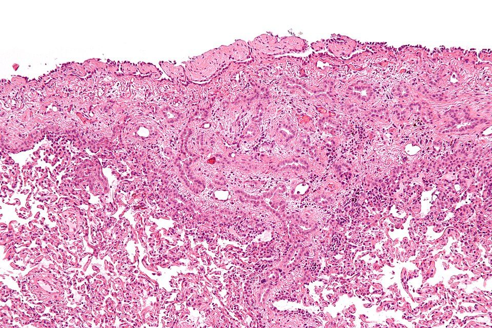
18Mesothelioma
Cancer of the pleura, and sometimes the peritoneum, almost always caused by asbestos inhaled decades earlier. It is a recognised occupational disease.
Read → 19
19Thymoma and thymic carcinoma
Rare tumours of the thymus, a gland behind the breastbone. They are linked to autoimmune diseases such as myasthenia gravis.
Read →Digestive system
 20
20Stomach and oesophageal cancer
Two upper digestive tract cancers that share symptoms and treatments. Helicobacter pylori, tobacco, alcohol and reflux are the main causes; perioperative chemotherapy and immunotherapy have improved the outlook.
Read → 21
21Colorectal cancer
One of the most common cancers worldwide. It almost always starts from a polyp that can be found and removed in time: faecal immunochemical test screening saves lives.
Read → 22
22Rectal cancer
Cancer of the last 15 cm of the bowel. It is treated differently from colon cancer: MRI, radiotherapy and specialist pelvic surgery; more and more patients avoid surgery with a "watch and wait" approach.
Read → 23
23Anal cancer
An uncommon cancer, almost always caused by HPV. Most cases are cured with chemoradiotherapy, without surgery.
Read →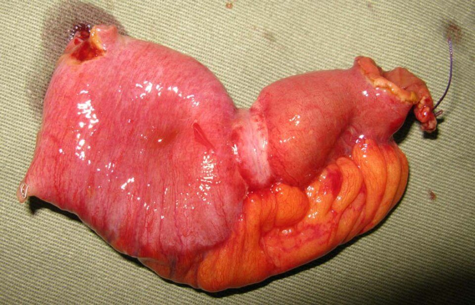
24Small bowel cancer
A rare cancer even though the small bowel is the longest part of the digestive tract. It includes adenocarcinomas, neuroendocrine tumours, GIST and lymphomas.
Read → 25
25Gastrointestinal stromal tumour (GIST)
A sarcoma of the digestive tract that changed oncology: it was the first solid tumour controlled with a targeted tablet, imatinib.
Read → 26
26Gastrointestinal neuroendocrine tumours
Tumours arising from hormone-producing cells of the gut. They usually grow slowly and some cause carcinoid syndrome; lutetium-177 has improved their treatment.
Read →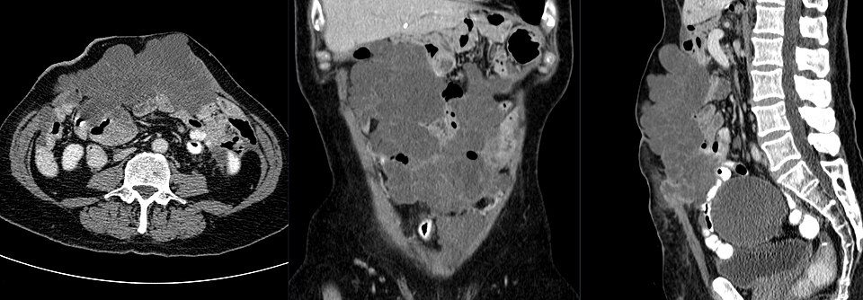
27Appendix cancer and pseudomyxoma peritonei
Rare tumours of the appendix, often found after appendicitis. Some fill the abdomen with mucus (pseudomyxoma) and are treated with surgery and heated intraperitoneal chemotherapy.
Read → 28
28Pancreatic cancer
One of the hardest cancers: it causes few symptoms until late and survival remains low. It is on course to become the second cause of cancer death in Europe; surgery with chemotherapy offers the best chance of cure.
Read →29Pancreatic neuroendocrine tumours
Tumours of the hormone-making cells of the pancreas. They are much less aggressive than ordinary pancreatic cancer; some produce hormones that cause striking symptoms.
Read → 30
30Liver cancer (hepatocellular carcinoma)
Primary liver cancer almost always develops in a liver damaged by hepatitis B or C, alcohol or fat. Ultrasound surveillance of people with cirrhosis allows early detection.
Read →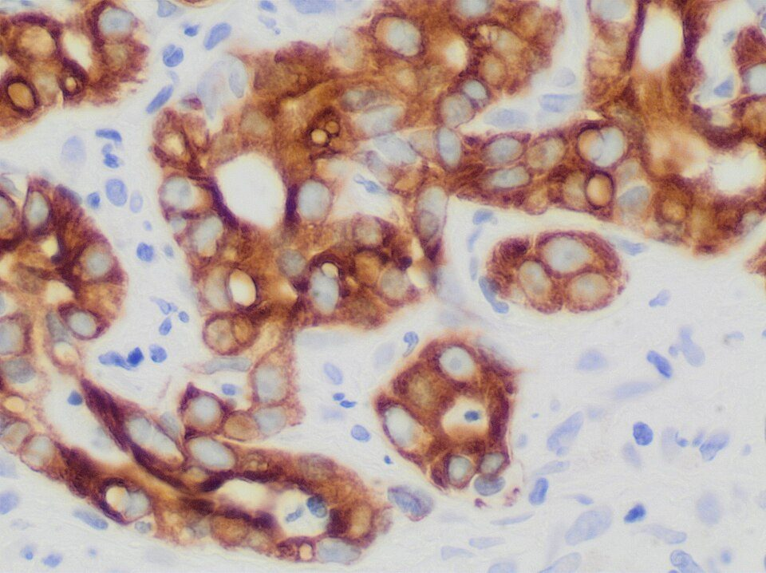
31Cholangiocarcinoma
Cancer of the bile ducts, inside or outside the liver. It is uncommon and hard to treat, but many carry genetic alterations with targeted treatments.
Read →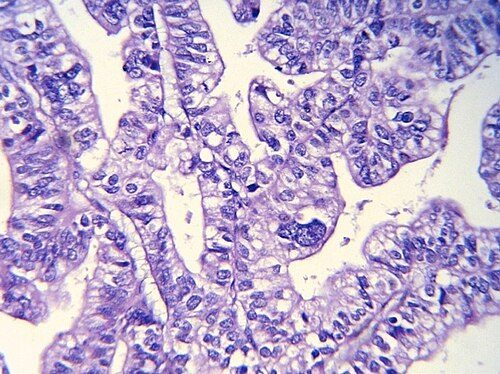
32Gallbladder cancer
An uncommon cancer in Europe but very common in Chile, Bolivia, India and elsewhere. It is often found by chance after gallbladder removal for stones.
Read →Urological and adrenal
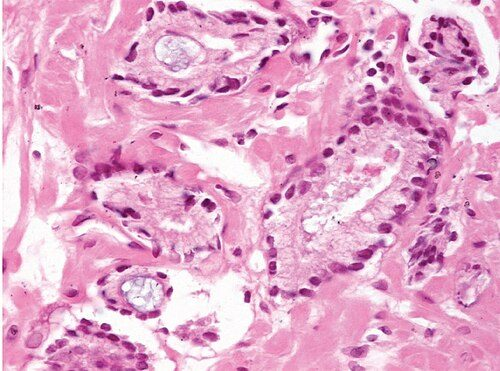
33Prostate cancer
The most common cancer in men in Europe. Many grow so slowly that they need no immediate treatment; others are aggressive. PSA, MRI and active surveillance help tell them apart.
Read → 34
34Bladder and kidney cancer
The two main urological cancers after prostate. Blood in the urine is their shared warning sign and tobacco their main avoidable cause; immunotherapy and antibody-drug conjugates have transformed treatment.
Read → 35
35Clear cell kidney cancer
The most common type of kidney cancer. Its biology, linked to the VHL gene and the oxygen-sensing pathway, explains why it responds to anti-angiogenics, immunotherapy and belzutifan.
Read → 36
36Upper tract urothelial cancer
Urothelial carcinomas of the renal pelvis and ureter. They are rare, linked to Lynch syndrome and certain herbal remedies, and often treated by removing the kidney and ureter.
Read → 37
37Testicular cancer
The most common solid cancer in young men and one of the most curable, even with metastases, thanks to cisplatin. Self-examination helps find it early.
Read → 38
38Penile cancer
A rare cancer in Europe but more common in parts of South America, Africa and Asia. It is linked to HPV, phimosis and poor hygiene; caught early it can be treated while preserving the organ.
Read → 39
39Adrenocortical carcinoma
A very rare cancer of the cortex of the adrenal glands. It often overproduces hormones; it is treated with surgery and mitotane.
Read → 40
40Phaeochromocytoma and paraganglioma
Tumours that make adrenaline and cause attacks of high blood pressure, palpitations and sweating. Almost 40% are inherited, the highest share of any tumour.
Read →Skin
 41
41Melanoma
The most serious skin cancer, although almost always cured if found early. Checking moles with the ABCDE rule, sun protection and immunotherapy have changed its story.
Read → 42
42Basal cell carcinoma
The most common cancer in humans. It grows slowly, almost never spreads and is cured by surgery in the vast majority of cases.
Read → 43
43Cutaneous squamous cell carcinoma
The second most common skin cancer. It appears on sun-exposed skin, sometimes from actinic keratoses; it is cured by surgery and cemiplimab has changed advanced cases.
Read →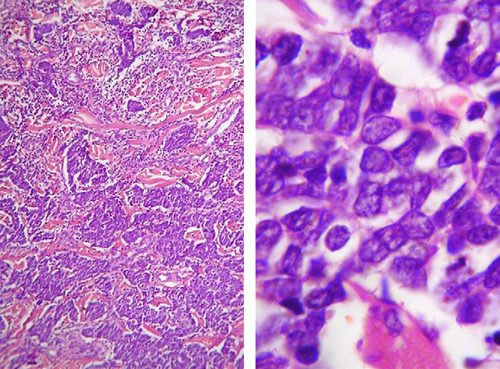
44Merkel cell carcinoma
A rare, aggressive skin cancer caused by a polyomavirus or by sun damage. It was one of the first tumours to show dramatic responses to immunotherapy.
Read → 45
45Kaposi sarcoma
A tumour of blood vessels caused by human herpesvirus 8. It was one of the first signs of the AIDS epidemic and is now controlled in most cases by antiretroviral treatment.
Read → 46
46Cutaneous lymphomas
Lymphomas that start in the skin. The most common, mycosis fungoides, develops over years as eczema-like patches.
Read →Head, neck and thyroid
 47
47Head and neck cancer
A group of cancers of the mouth, throat, larynx, nose and salivary glands. Tobacco, alcohol and HPV are the main causes; treatment aims to cure while preserving voice, swallowing and appearance.
Read →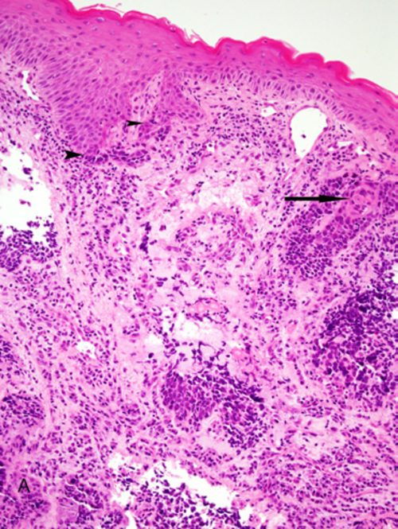
48Mouth cancer
Cancer of the lips, tongue, gums, floor of mouth and palate. A sore that does not heal in three weeks should be checked; dentists can spot it early.
Read →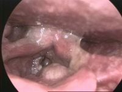
49Laryngeal cancer
Cancer of the vocal cords and larynx, almost always linked to tobacco. Persistent hoarseness allows early detection, when over 90% are cured while keeping the voice.
Read → 50
50Oropharyngeal cancer
Cancer of the tonsils and base of tongue. It has risen sharply because of HPV, which affects younger non-smokers and has a better outlook.
Read → 51
51Nasopharyngeal cancer
Cancer of the upper throat behind the nose. Very common in southern China and South-East Asia, linked to Epstein-Barr virus; it responds very well to radiotherapy.
Read → 52
52Salivary gland cancer
Rare and very varied tumours of the parotid and other salivary glands. Most parotid lumps are benign, but all should be investigated.
Read →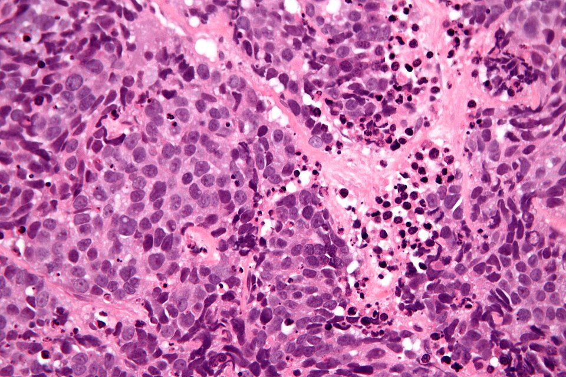
53Nasal and sinus cancer
Rare tumours of the nose and sinuses, linked to wood dust, leather and other workplace exposures. Their symptoms are mistaken for sinusitis.
Read → 54
54Thyroid cancer
The most common endocrine cancer. Most are papillary carcinomas with an excellent outlook; today's challenge is avoiding overdiagnosis of tiny tumours.
Read →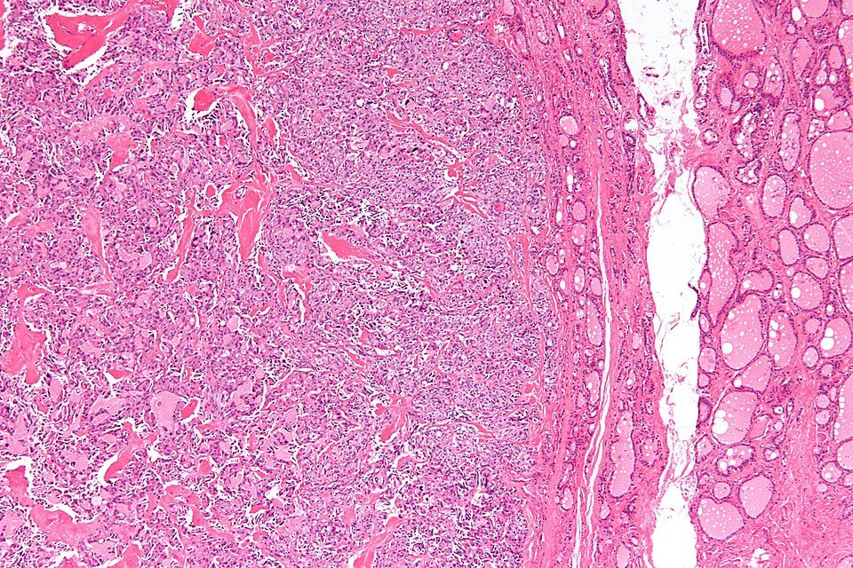
55Medullary thyroid cancer
Cancer of the thyroid C cells, inherited in a quarter of cases through RET gene mutations. Identifying carriers allows the thyroid to be removed before it develops.
Read → 56
56Anaplastic thyroid cancer
One of the most aggressive cancers there is, though very rare. Targeted therapy against BRAF has for the first time allowed some patients to have surgery and disease control.
Read →Eye and nervous system
 57
57Uveal melanoma
The most common primary eye cancer in adults. Very different from skin melanoma: it is not caused by the sun, is often treated while keeping the eye and tends to spread to the liver.
Read → 58
58Retinoblastoma
An eye cancer of young children. A white pupil in flash photos is the typical sign; over 95% are cured in well-resourced countries.
Read → 59
59Brain tumours
A very varied group of tumours of the brain and spinal cord, from benign meningiomas to glioblastomas. The 2021 WHO molecular classification has changed their diagnosis.
Read →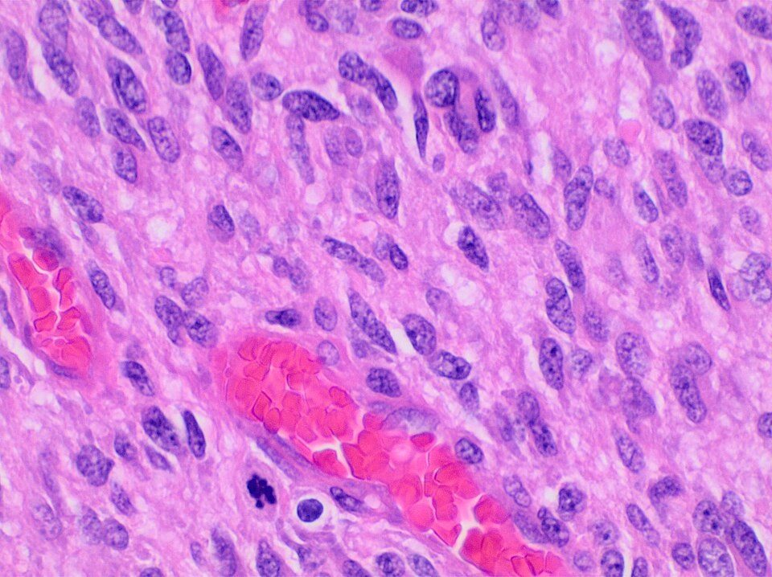
60Glioblastoma
The most common and aggressive malignant brain tumour in adults. Standard treatment combines surgery, radiotherapy and temozolomide; research is seeking new approaches.
Read → 61
61Low-grade gliomas (IDH-mutant astrocytoma and oligodendroglioma)
Slow-growing gliomas in young adults, defined by the IDH mutation. Vorasidenib is the first targeted therapy to delay their progression.
Read →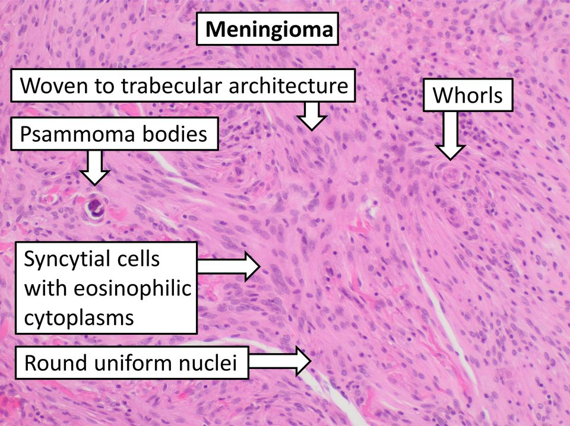
62Meningioma
The most common primary brain tumour. It arises from the meninges and is almost always benign; many need only monitoring.
Read →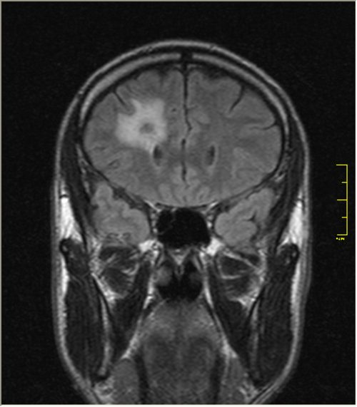
63Brain metastases
The most common brain tumours, coming from lung, breast, melanoma or kidney cancers. Radiosurgery and drugs that cross the blood-brain barrier have greatly improved their control.
Read → 64
64Primary central nervous system lymphoma
An aggressive B-cell lymphoma confined to the brain, eyes or spinal cord. It is treated with high-dose methotrexate chemotherapy, not surgery.
Read → 65
65Pituitary tumours
Almost always benign tumours of the gland that directs the body's hormones. They can cause acromegaly, Cushing's, period changes or loss of vision.
Read → 66
66Medulloblastoma
The most common malignant brain tumour in children. It arises in the cerebellum and three in four are cured; molecular classification guides treatment intensity.
Read → 67
67Ependymoma
A tumour arising from the lining of the brain's ventricles and the spinal canal. In children it is usually in the posterior fossa; in adults, in the spinal cord.
Read →Blood: leukaemias, lymphomas and myeloma
 68
68Leukaemias
Cancers of blood cells formed in the bone marrow. There are acute forms, needing urgent treatment, and chronic ones, sometimes needing only monitoring. Cure rates have risen thanks to chemotherapy, transplant, targeted therapy and CAR-T.
Read →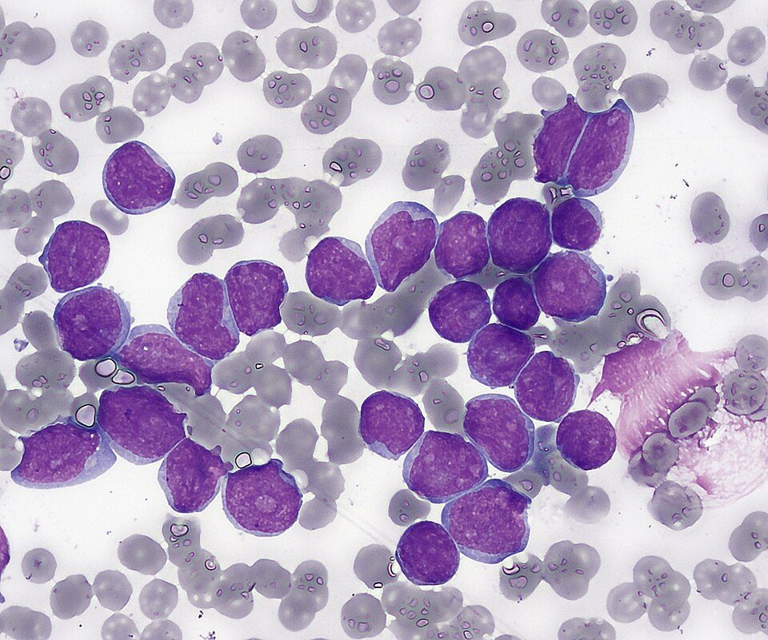
69Acute lymphoblastic leukaemia
The most common childhood cancer, with 90% of children cured. In adults it is harder, but blinatumomab, inotuzumab and CAR-T have greatly improved results.
Read → 70
70Acute myeloid leukaemia
The most common acute leukaemia in adults. Its genetic profile decides treatment: intensive chemotherapy, drugs targeting FLT3, IDH or menin, venetoclax and transplant.
Read → 71
71Acute promyelocytic leukaemia
A leukaemia that was once among the deadliest and is now cured in over 90% of cases without chemotherapy, using all-trans retinoic acid and arsenic trioxide.
Read → 72
72Chronic lymphocytic leukaemia
The most common leukaemia in adults in Western countries. Many people need only monitoring for years; when needed, targeted tablets have replaced chemotherapy.
Read → 73
73Chronic myeloid leukaemia
The leukaemia that launched the era of targeted therapy. With imatinib and its successors, life expectancy is near normal and some people can stop treatment.
Read → 74
74Hairy cell leukaemia
A rare chronic leukaemia with "hairy" lymphocytes. It almost always carries the BRAF V600E mutation and responds very well to treatment.
Read →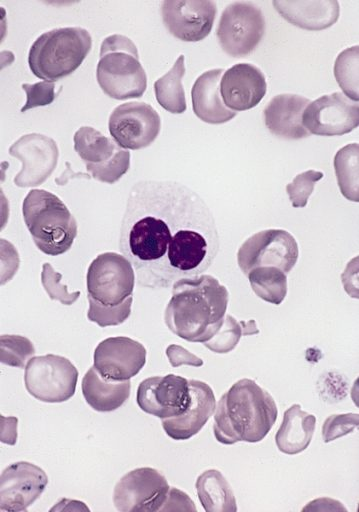
75Myelodysplastic syndromes
Bone marrow diseases that make faulty blood cells, mainly in older people. They cause anaemia and can progress to leukaemia.
Read →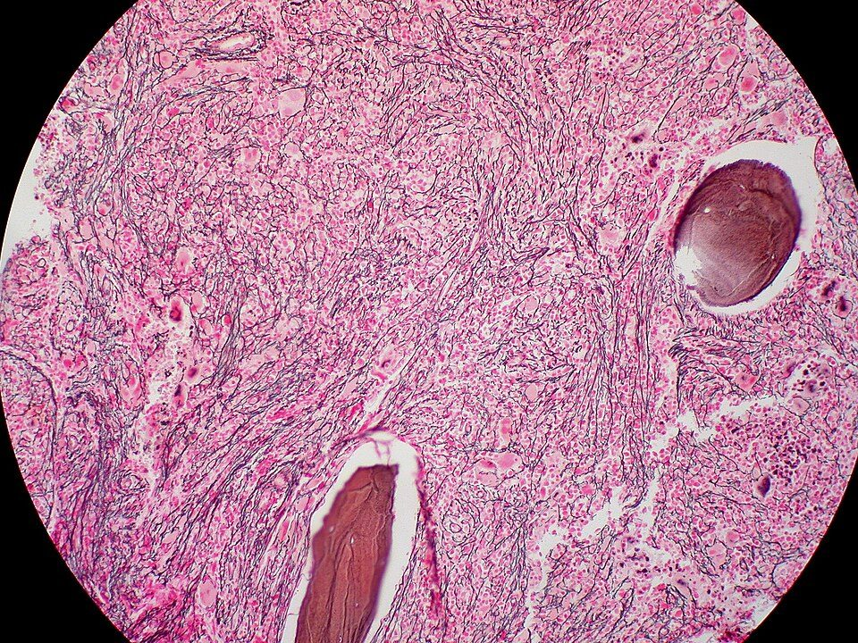
76Myeloproliferative neoplasms
Polycythaemia vera, essential thrombocythaemia and myelofibrosis: chronic marrow diseases that make too many cells, linked to the JAK2 mutation. Their main danger is blood clots.
Read → 77
77Lymphomas
Cancers of the lymphatic system, with over 80 types. They are divided into Hodgkin and non-Hodgkin, indolent or aggressive; many are cured and others controlled for years.
Read → 78
78Hodgkin lymphoma
A lymphoma of young people cured in over 85-90% of cases. Modern PET-guided treatment aims to cure with fewer long-term effects.
Read →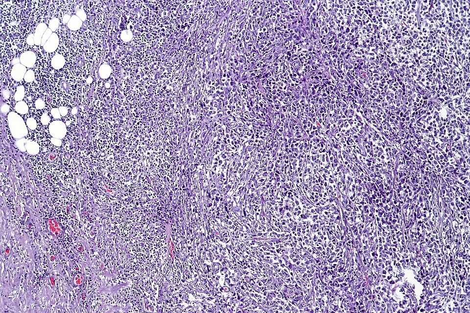
79Diffuse large B-cell lymphoma
The most common lymphoma. It is aggressive but cured in two out of three cases with immunochemotherapy; CAR-T and bispecific antibodies have changed relapse treatment.
Read →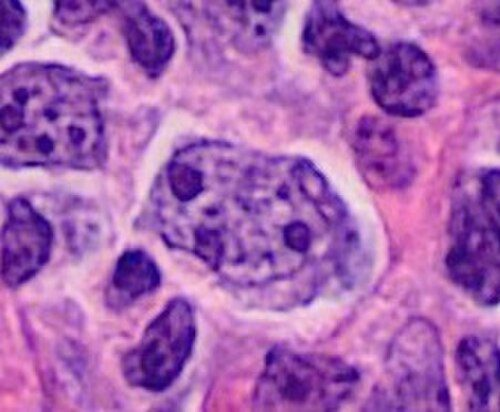
80Follicular lymphoma
The most common indolent lymphoma. It grows slowly over years; many people spend long periods without treatment and live for decades.
Read →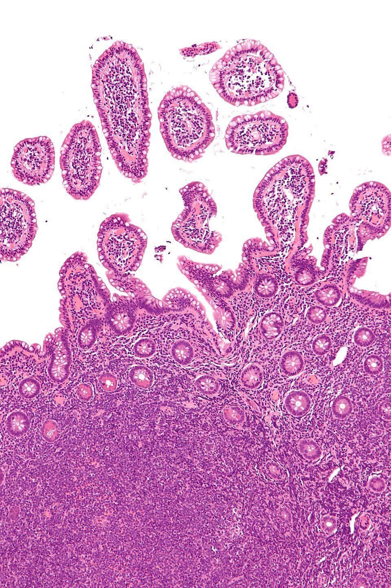
81Mantle cell lymphoma
An uncommon B-cell lymphoma, mostly in older men, with the cyclin D1 translocation. BTK inhibitors have greatly improved its treatment.
Read → 82
82Marginal zone lymphomas
Indolent lymphomas often linked to infection or chronic inflammation. Gastric MALT lymphoma can be cured with antibiotics against Helicobacter pylori alone.
Read → 83
83Burkitt lymphoma
The fastest-growing human tumour, doubling in size in a day. Even so, over 90% of children and 80% of adults are cured with intensive chemotherapy.
Read →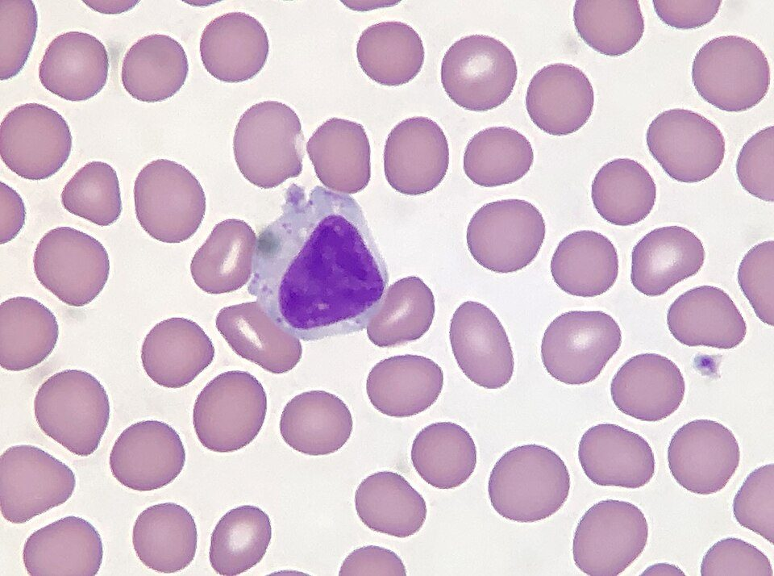
84Peripheral T-cell lymphomas
A group of rare and varied lymphomas of mature T lymphocytes. Many are aggressive; brentuximab has improved those expressing CD30.
Read →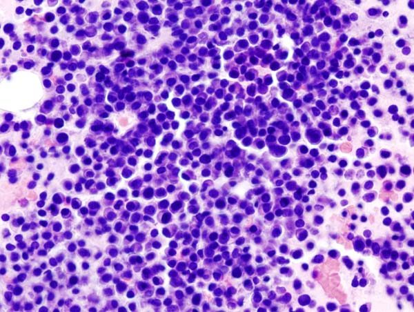
85Multiple myeloma
Cancer of the antibody-making plasma cells in the bone marrow. It damages bones and kidneys; it remains incurable for most, but survival has multiplied with new combinations, CAR-T and bispecifics.
Read →86Waldenström macroglobulinaemia
An indolent lymphoma that makes an IgM protein which thickens the blood. It almost always carries the MYD88 mutation and responds to BTK inhibitors.
Read →Sarcomas and bone
 87
87Sarcomas
Rare cancers of the supporting tissues: muscle, fat, bone, cartilage, vessels and nerves. There are over 70 types and they should be treated in reference centres; a lump over 5 cm or growing should be checked.
Read → 88
88Liposarcoma
The most common soft tissue sarcoma in adults, arising from fat cells. Its subtypes range from very slow to aggressive.
Read → 89
89Leiomyosarcoma
A sarcoma of smooth muscle, found in the womb, blood vessels, retroperitoneum and limbs. It tends to spread to the lungs and liver.
Read →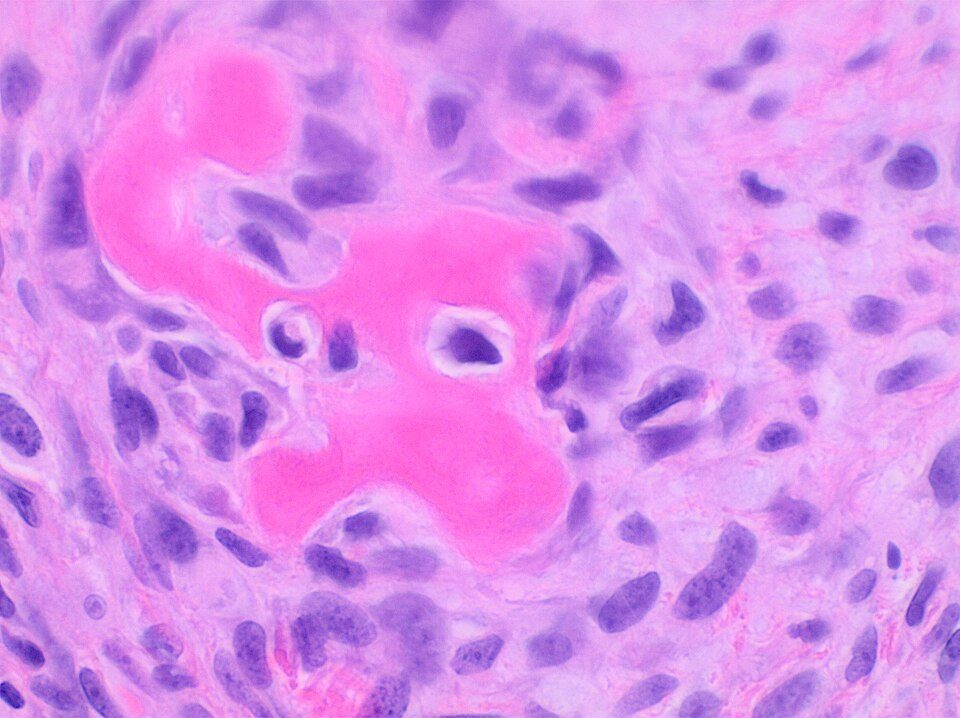
90Osteosarcoma
The most common bone cancer in teenagers. It appears near the knee or shoulder during the growth spurt; with chemotherapy and surgery, two in three localised cases are cured.
Read → 91
91Ewing sarcoma
A bone and soft tissue tumour of children and young people, defined by the EWSR1-FLI1 fusion. It requires intensive chemotherapy, surgery and radiotherapy.
Read → 92
92Chondrosarcoma
Cancer of cartilage, the most common malignant bone tumour in adults. It does not respond to chemotherapy and barely to radiotherapy: surgery is key.
Read → 93
93Rhabdomyosarcoma
The most common soft tissue sarcoma in children, arising from cells resembling skeletal muscle. It is treated with chemotherapy, surgery and radiotherapy.
Read → 94
94Angiosarcoma
A rare, aggressive sarcoma of blood or lymph vessels. It appears on the scalp of older people or after breast radiotherapy.
Read →Children and other
 95
95Childhood cancer
Cancer in children and teenagers is rare and very different from adult cancer. Today more than 8 in 10 are cured in Europe, thanks to collaborative trials and specialist units.
Read → 96
96Neuroblastoma
The most common solid tumour outside the brain in young children. Some disappear on their own and others are very aggressive; anti-GD2 immunotherapy has improved the outlook for high-risk disease.
Read → 97
97Wilms tumour (nephroblastoma)
The kidney cancer of young children. It is usually found as a lump in the abdomen and over 90% are cured.
Read →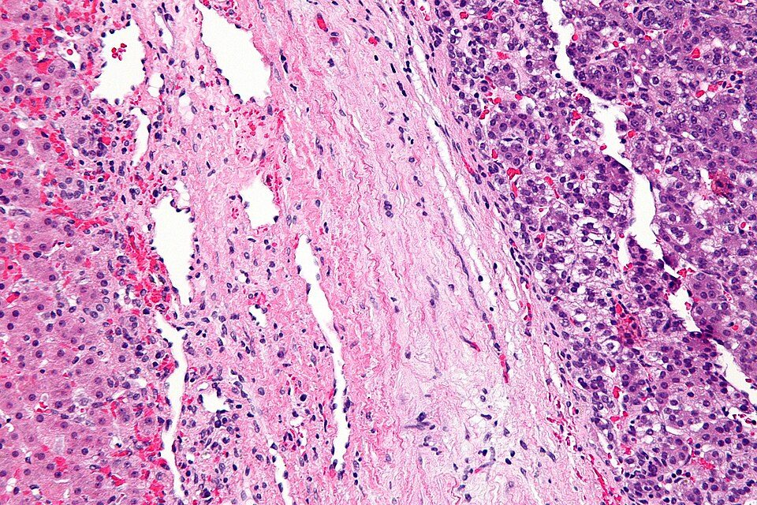
98Hepatoblastoma
The most common liver cancer in young children. Cisplatin chemotherapy and surgery, or liver transplant, cure most.
Read → 99
99Cancer of unknown primary
Metastases where the original tumour cannot be found despite full investigation. Molecular tests help identify the origin or a treatable target.
Read → 100
100Bone metastases
Bone is one of the commonest places for breast, prostate, lung, kidney and thyroid cancers, and myeloma, to spread. There are effective treatments for pain and to prevent fractures.
Read →